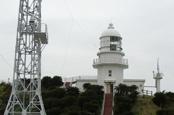
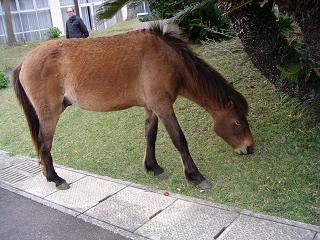
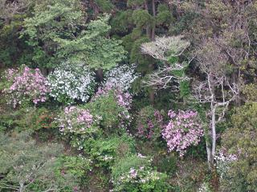
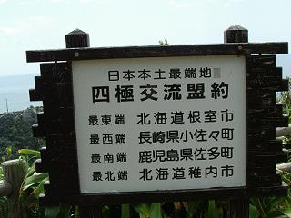
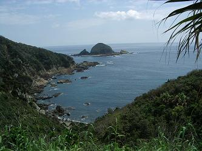
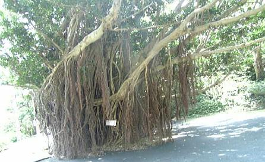
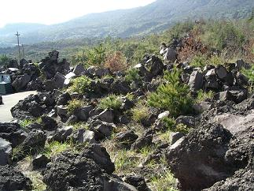
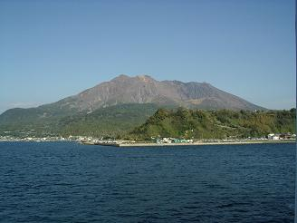

|
話を少し戻しまして、飫肥での昼食後バスに乗り込むと、一枚の用紙が配られました。 何の用紙かと言いますと、その日に泊まるホテルでの夕食に含まれないご自慢の一品料理があるそうで、その申し込みだとか… 一品料理を頼まなければならないくらい質素な夕食…？ 鵜戸神宮から佐多岬まではちょっと距離があり、歴三年というガイドさんは、若いながらもいろいろな『話のタネ』を準備しており、最近はあまりお目にかからない歌姫でもありました。 鹿児島出身だそうで、お国言葉をあれこれご披露してくれましたがこれといって覚えておりません。（ _w_ ； 近所の友人に鹿児島出身の人がいて、『バリバリの九州言葉を話す人』だと思っていたのですが、ガイドさんが聞かせてくれる言葉を聞くと、まぁったく、何を言っているのかわからず、鹿児島言葉は他所の土地から来た人にはわからないように作られた…ということは、何かの本かテレビで見て知っていましたが、 あの人は、標準語で喋っていたんだ… と始めて気がつきました。 この旅行記のタイトルになっている『ゆくさ 南九州へ』というのは、実は鹿児島の言葉で、『ようこそ南九州へ』という意味で、これはバスの前に貼ってあった地図の端に書いてあり、反対側の端には『おさいじゃったもした』と書いてあって、こちらは『おいでくださいました』という意味なんだそうです。 これが名古屋言葉だったら バスは海岸沿いから海の見えない平野部に入り、いつしか山道へ… 『御崎馬』というのは、長野県の木曽馬や北海道の道産子などと同じように日本在来馬と言われ、『自然における日本特有の家畜』として国の天然記念物に指定されているそうです。 …と言うことで、保護管理にご協力下さいと、寄付金￥２００の回収です。 何処にその馬がいるのかと探していると、糞ばかりが目について肝心の馬の姿がありません。 とても私たちでは登って行けそうにない、７０度近くの斜面に馬たちが作ったらしい細い横道ができており、そこでモシャモシャと草を食んでいます。 道と言っても本当に細いもので、よくあんなところに立っていられると思うほどの斜面で、あの道では人は歩けそうにありません。  「お客様がやって来た！」 土産物屋が一軒と灯台があるだけで、なんにもありません。（＾へ＾； 『ターザンの森遊歩道』という小道が灯台から下にジグザグに伸びており、御崎神社とかソテツの自生地などがあるとのことで、馬だけではなく野生の猿も見られるそうでしたが、ターザンの森って。。。木の上からぶら下がっているツタなんかに摑まって移動しなけりゃ行けないところもあるのだろうか？  ホテルに着いてみると近くに馬がやってきており、部屋にカバンを置いて早速写真を撮りにいきました。 木曽馬に比べると足がちょっと細いようですが、身体もそんなには大きくなくこの馬の背中はちょうど私達の胸くらいの高さでした。（子供だったのかもしれません） 付近をちょっと歩いてみましたが、岬というと海にせり出した海岸線がずいーっと見渡せるもの（愛知県はそんな岬が多いので）だと思っていたのですが、灯台のあったところからもホテルからも海岸線なんてちら！ほら！と見えるくらいで、山に登っているときに山の形が見えないのと同じようなものだ…と、初めて気がつきました。 ところで、ここは残念ながら温泉ではありません。 お風呂に入ってさっぱりしたところで夕食ですが、一品料理の申し込みがあったことから、あまり期待はしていなかったのですが、席についてみると品数はまあまあ普通にあり、部屋番号を聞いた上で追加された一品がテーブルに運ばれてみると、羽を広げられたトビウオが見事で。。。。。。。 食べてしまいました！（ _w_ ； どうも私は食べ物の誘惑に弱いようで、料理の前に座ってしまうと食べることしか考えられないようです。Ψ(⌒～⌒） サザエの塩焼きも食べちゃいました！ そして、自分たちの一品料理を平らげてしまうと、気になるのが他所の人は何を頼んだのだろう…？ということで、それまで私たちと同様に目の前で黙々と食べていた、珍しく男性の二人連れ。 「オトウサンたちは、一品料理に何を注文されたんですか？」（*＾ー＾） 矢張り二品を頼んだようで、その茶色い物体は『地鶏』だと説明され、もうひとつもなんやら（すでに記憶が薄れて来ているようで思い出せません）だと聞いて、 旅行先での定番の挨拶である 何処そこへ行ったとか、何処そこはよかったとか旅の話はいつまでもつきませんが、そろそろ他の人たちが引き上げ始めたので、私たちも部屋に帰ることにして、いつも『トリ』を勤めると言うお二人に挨拶をして席を立ちました。  フェリーでの睡眠不足を補うように早目に床についた私たちは、翌朝の寝覚めもすっきりと、朝食もモリモリ食べ、部屋から見えていた裏山に猿の一匹でも見つからないかと目を凝らしながら、白やピンクに咲いていたつつじしかカメラに収めることができず、忘れ物がないか何度もチェックしながら部屋を出ました。 この日は昨日までの正規の席より三つ前に移動して、前から五番目の席となり、二日間王様の座席を占領したばかりに堪える狭さ… ガイドさんは今日も元気で、志布志港を出発して昨日は何処を走り、今日は何処を走るのかをテレビの下に貼った地図を指して説明し、本土最南端の【佐多岬】を目指します。  これぞ岬！という写真がやっと撮れました。 駐車場でバスを降りてから先端にたどり着くまで２０分くらい起伏のある細い道を歩かねばならず、個人で行けば『入岬料』（？）を払う入り口のトンネル前に何本かの『ステッキ』が備え付けてあるのが目に入りました。  夜の間に雨が降っていたようであちこちに水溜りができている山道を、鶯の鳴き交わしを聞きながら下り、小さな神社の前を通り過ぎ、時折見晴らしのきく木立の切れ間を覗き込みながら、名も知らぬ花を横目に行き止まりの展望台に到着すると、紺碧の海に灯台のある島が見え、これぞ岬なりというべき景色に出会えて満足し、ふと見るとドライバーさんも健脚振りを発揮してやって来ておりました。 どのくらいの距離（足場の状況）があるのかわからないので、ひたすらガイドさんの後についてゴールを目指してきましたが、時間に限りのあるツアー自由散策はここからが本番となります。 一番高い位置から灯台を見下ろせる展望台から少し降りてみると、もうひとつの展望台があり上のような看板が立っておりました。  往きに木立の間からチラホラ展開していた西側からの眺めもカメラに収めることができ、ソテツの多い南国情緒たっぷりの散策道に咲く花々もゆっくり観賞しながら、何処をどう歩いて来たのか眺めますが、鵜戸神宮と同じように木立に囲まれてまったくわかりません。 神社に戻ってお参りをして振り返ると、参道のように下へ下りて行く道がありますが、両側から覆い被さるように根元から曲がって横に伸びているソテツに遮断され、その向こうには立ち入り禁止を知らせるロープが張ってありました。 そこからはトンネルまで上りになっており、ところどころで水が滴り落ちている薄暗いトンネルを抜けると、バスの止めてある駐車場ですが、平日ということもあり広々とした駐車場には２台の車と私たちが乗ってきたバスしか止まっていません。 まだ暫くは時間があったので、私たちは灯台の見えない東側の海を眺めたりトイレに行ったりして過ごし、ドライバーさんがバスに乗り込んだのを合図に、それぞれ自分たちの席に戻りました。 ところが 何度か試みますがセルモーターすら回る気配がなく、ドライバーさんがバスを降りて後部座席の下あたりにあるエンジンルームを開けたので、何人かがぞろぞろとバスを降りて様子を見ていましたが、どうにもならないようでポケットから携帯電話を取り出し、電話をかけようとするのですがどうやら圏外になっているようで連絡ができないようです。 ガイドさんも携帯を出してピ！ピ！ピ！ 場所を移動したりしてかけてもダメらしい。 ドライバーさんは駐車場の入り口にある公衆電話のボックスに入りますが、なぜかすぐに出てきて、その隣に立っているバス停の時刻表を見ているようですが、これといった変化がないところをみると暫く来そうにないのでしょう。 「公衆電話が壊れていたんだって」  その大きな木がこれ。 裏へ周って見ると幹も太かったのですが、なぜか枝から沢山の根っこを垂らしていました。 これはまだバスが故障しているとは気がつかなかった時に写したものですが、この大きな木が私たちを照りつける日光から守ってくれました。 岬へ入る入場料やお土産を売っていた売店で電話を借りたようで、やがて私たちのところへ添乗員さんがやってきて、昼食をする予定のホテルに連絡を取ってみたが、あいにく運転手がいない。 一先ず『何とかなった！』と安心して、何処かに腰を下ろすところはないか…と辺りを見回し東屋らしきものを見つけて、そこにたった一人座っている人が、飫肥の昼食店で「いっぺん言えばわかる！」と言った人だとわかりましたが、トウモロコシさんは大人であり、そんなことは忘れたように この男性夫婦連れなのですが、なぜか奥さんと離れて単独行動をしていることが多いようで、バスの中では奥様一人を決められた席に残して最後部の座席の半分を占領しており、奥様はこの岬でも一人寂しく歩いていたようで、 何が失礼かと言うと、私には別段失礼でもなんでもなかったのですが、ツアーの中でも年若な私がどうして三泊もの旅行に出てこられたのか、彼女には不思議でならなかったようです。 「子供たちから手が離れて、代わりにジジババがいますけど、自分たちのことは自分たちでできなくはないのでこうして出てきてます」（⌒ｍ⌒； さてそのだんな様の方は壊れかけた東屋に座っておりますが、奥様はがじゅまるの木の下にでもいるようで、ここからはだんな様との会話です。 「夕べは、例のアレが始まって２時間もやるというから見ていたけど、役者が変わって少しは変ったかと思ったら、相変わらずガチャガチャなもんで見るのをやめた」 オトウサン、一度は言ってくれないと話が見えないですよぉ。。。 「アメリカから妹が帰ってきて、相変わらずだった」 トウモロコシさんは何がなんだかわからなかったと思いますが… トウモロコシさんを無視していたわけではなく、他の話もしていたのですが、抜粋して掲載しました。 故障して停められたままのバスより小さめのバスが坂道を登ってきて、荷物を持っていくの行かないのですったもんだしましたが、最終的には最初に乗り込んだ人たちは荷物を持ち込みましたが、無理矢理残りの全員を乗せてしまったので後から乗った人は荷物を残しました。 最初に借りた車には添乗員さんとドライバーさんと、年配のご夫婦が４人乗って行ったと思うのですが、それにしても残りは３０人もいたわけで、運転席のすぐ後ろの私たちの席には３人が座り、ステップ周りに何人かの男性たちが立ちました。 バスはエンジン音も重たげに走り始め、プロの運転手さんとはいえ、下り坂をズアーッ！と走り下り、 細い坂道で、対向車が来たら擦れ違えそうにない道の先にじっと目を凝らし（前はドライバーさん担当）、「来た！」と知らせる。 とにかくかなり定員オーバーしているので、ブレーキだってききが悪いに違いないだろうし、下手をすれば壊れかねません。 これで事故ったら、ツアー会社もバス会社もエライことになります。 どうしてドライバーさんがここまでして躍起になったのかと言いますと、この日私たちは桜島から鹿児島までフェリーに乗らねばならず、何が何でもそれに遅れるわけにはいかなかったのです。 やっと海岸近くのホテルについた頃には、私の右足もブレーキの踏み過ぎで疲れ果てておりました。（＾ｍ＾； ホテルに着いてみると、残してきたはずのガイドさんが駆け寄ってきて、違うバス会社の観光バスも来ておりました。 「ガイドさん、今度のバスは空を飛べるんですか？」 途中に一本だけ横道があったのを覚えていましたが、さすがは地元のバスのドライバーさん、近道を知っていたんですね。 頑張ったドライバーさんは、とても恐縮して食事をしている私たちに謝罪の言葉を述べ、 私たちはああでもないこうでもないと勝手なことばかり言っていましたが、目に見えないところでは、多くの人々が私たちのために走り回っていたのだと思います。 「いいよ、いいよ。気にしなくてもいいからね」 定刻より一時間半ばかり遅れてしまったので、なるべく急いで先の行程を進めて行きたいということで、食事が終わったら早々に出発です。  次に訪れたのは【有村展望台】で、ここではパインやタンカンを搾ったジュースが売られていました。 固まった溶岩がゴロゴロしているちょっとした高台に上がって桜島を目の前に眺めますが、ところどころに噴火したときに逃げ込むコンクリートの『避難壕』があり、今も活動しているという現実が窺えます。 写真はかなり土に埋もれていますが、今から１６年ほど前に行った時には、この溶岩が石炭のように真っ黒で、むき出しになっていたのを思い出しました。 ここで短い見学を済ませて帰ってくると、鹿児島からやってきたバスに乗り換える予定だったのですが、ここまで来たもののクーラーが効かないということが判明したようで、また同じバスに乗り込みます。 乗客が全員乗り込んだ後になって、バス会社の上役らしき人が乗ってきてお詫びの挨拶がありました。 「ええよ、ええよ、こういうこともあるわさ」 ガイドさんも添乗員さんもこの日はもう謝りっぱなしで、バスは桜島へ向けて出発します。 『桜島』と何気なく言っていたのですが、実はここ本当に島だったんです。 変っているのが、火山灰が被らないようにひとつひとつのお墓に屋根が建ててあるのです。（死んでからでも一戸建てに住めるとは羨ましい限りです）  今回最後の写真が桜島です。（フェリーから撮りました） 桜島港からバスに乗ったままフェリーに乗り込み、しばしの船旅は妙にツアー客同士が和気藹々としており、写真を撮り合ったりしておりました。 桜島港から鹿児島港まではあっという間です。 さて、バスは途中名物の『かるかん』工場へ立ち寄りまして、ここでやっと代わりのバスに乗り換えお宿の指宿へ向かいます。 添乗員さんがマイクを持って立ち上がり、予定より一時間遅れになってしまいましたが、砂風呂に行かれるお客様はお酒を飲んでからでは良くないので、夕食は８時になると説明がありました。 そこで『ちょっと待った！』の一言が『一分遅刻』の男性から入りました。 「夕食が八時とはいくらなんでも遅すぎる！」 バスの到着が一時間遅かったので止むを得ないのは止むを得ないのですが、彼が言うのには、 説明下手な添乗員さんは、おろおろと同じことを何度も繰り返し、それはできないが何とか少しでも早目になるように交渉してみます…と言う返事をしました。 すると、今度は『いっぺん言えばわかる』の男性が、 結局夕食は７時４５分となり、一人一本の飲み物サービスがつきましたが、宿に着いて大急ぎで砂風呂に行く準備をしてエレベーターに乗ると、夕食が遅すぎると文句を言った男性夫婦と一緒になり、自分はいつも５時に夕食をしていると言いました。 「添乗員さんがこっそりと夕食は７時半にしたと教えてくれた」 はい。 「貴金属類はやけどの恐れがあるので外して行って下さい」 「浴衣に着替えてお出掛け下さい」と言われましたが、砂風呂初心者の私は、 さて、お迎えのバスに乗って２～３分の公共砂風呂へ出発です。 普通のスーパー銭湯と同じように、入り口で浴衣とタオルを渡され、脱衣所で渡された浴衣に着替えますが、下着は何も着けません。 眼鏡を外すと何も見えないというトウモロコシさんの手を引いて、タオルを首にかけて外に出ると、すうすうと夜風が薄い浴衣を通して肌に当たるのを感じながら、堤防からの階段を下りて砂浜に出ます。 「あ！波打ち際に湯気みたいなものが立ってる！」（ @o@)⊃ と、おひい様の手を引いて行ってみますと、たて看板に８５度の温度になっているから気をつけるようにと書いてある（砂風呂はこんなに熱くありません）のが読め、それを教えようとした途端に、波打ち際の砂にずぶずぶと足を埋めていたトウモロコシさんが なにはともあれ、同じホテルからやって来た８人で、みんな一緒に帰ろうと時間を決めていたので、またおひい様の手を引いて砂風呂場へ… 堤防下の足場のいいところを歩いて行くと、海に向かって二列になった手前の方はすでに人が埋まっており、５人くらいで仕切られた砂風呂を３～４つ先に行くと空いているところがあり、すでに枕の部分と体を横たえる穴がまるで浅い棺のように並んでいます。 首にかけていたタオルを言われるままに頭に被り、両端を前に垂らして上向きに寝ると、先ず左腰の辺りに砂がかけられます。 同じツアーの人たちらしき声で、カメラを持ってきた人が写真を写してもらっているようで、 全身にかけられた砂は心地よい重さで、じわりじわりと背中から熱が伝わってきて、手首や足首がドクン！ドクン！と脈打つのがわかります。 トウモロコシさんは（今にして思えばですが）時計が見えないせいかさっさとお風呂を出て行きましたが、私はまだ時間は大丈夫とばかりにお風呂に浸かり、近くにいた色白美人の方とお話をしていました。（なんとまあ思いやりのない友でしょう…）（＾ｍ＾； てっきり同じ旅行者だと思っていたのですが、彼女は地元の人で、この砂風呂に来るようになって痩せたのだとか… 「ほう ほう」（＾ー＾*）エエノウ… と、まあそんなことで、浴室から出るとそこが最初の脱衣所になっており、無事身に着けて来た物をまとってフロアーに出、一人彷徨っていたトウモロコシさんも捕獲（＾ｍ＾；）し、同じグループに後からやって来た二人を足した１０人バスに乗って宿に帰りました。 そのまま夕食会場へ向かい、サービスのビールをクピクピやりながら食事をしますが、まだ砂風呂の効力が残っているようでじわりじわりと汗が湧いてきます。 部屋に帰っても身体はぽかぽかとしており、砂風呂がこんないいものだとは…１６年前にどうして行かなかったのか！と、子供たちに体験させてやらなかったことを後悔するばかり… 作成:2006-05-09 コメントはこちら 続きを読む
続きを読む
 |